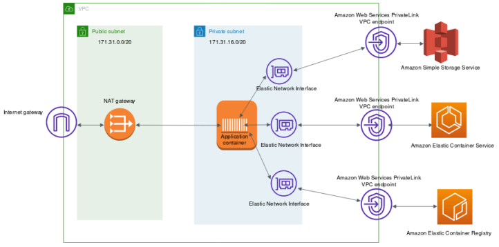

Amazon Elastic Container Service (ECS)
Amazon Elastic Container Service (ECS) is a highly scalable, fully managed container orchestration service designed to simplify the deployment, management, and scaling of Docker-based applications. As a native AWS solution, ECS integrates deeply with the broader ecosystem, providing a streamlined alternative to complex orchestration platforms like Kubernetes. At its core, ECS architecture revolves around clusters, which are logical groupings of compute resources that run your applications. Users define their workloads through Task Definitions, JSON-formatted blueprints that specify parameters such as the Docker image to use, CPU and memory allocations, networking modes, and IAM roles for granular security.
A key technical differentiator of ECS is its support for two primary launch types: AWS Fargate and Amazon EC2. Fargate offers a serverless experience, allowing developers to run containers without managing the underlying virtual machines, whereas the EC2 launch type provides direct control over the instance types and cluster configuration. For service-level management, ECS uses a Service scheduler to maintain the desired number of running tasks, handling health checks and automatic replacement of failed containers to ensure high availability.

Figure 1: Connectivity over AWS PrivateLink.
ECS further extends its utility through Amazon ECS Anywhere, which enables consistent orchestration for on-premises workloads using the same managed control plane. The service also features advanced networking capabilities through Elastic Load Balancing (ELB) and service discovery, allowing microservices to communicate efficiently within a Virtual Private Cloud (VPC). By automating the heavy lifting of infrastructure management and scaling, ECS allows engineering teams to focus strictly on building and optimizing containerized code while maintaining rigorous security standards through native AWS Identity and Access Management (IAM) integration.